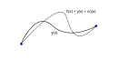

Calculus of Variations
So far we have seen the utility of d’Alembert’s principle and the Euler-Lagrange equations derived from it. We would now like to present a new formulation of dynamics with a new principle that will allow us to re-derive the Euler-Lagrange equations while providing an even more powerful framework for describing physical laws.
The mathematics behind this formalism is called the Calculus of Variations and is concerned with finding the extreme values of functions-of-functions known as functionals. For example, imagine we have some function \(y\) of the variable \(x\). Then, our experience with Lagrangians suggests we should care about objects of the form \[\phi\Big( y(x),\; y'(x),\; x\Big)\] that is, for a given value of \(x\), \(\phi\) maps the function \(y\) and its derivative and maps them to some number. Integrals tend to do this operation of sending functions to numbers nicely. Therefore, let’s consider a scenario such as \[\int\limits_{x_1}^{x_2}\phi\Big( y(x),\; y'(x),\; x\Big)dx\] which looks more familiar if we think of the problem of finding the curve which minimizes the distance between two points. We know distance is calculated by \[ds = \Big(dx^2+dy^2 \Big)^{1/2} = \left(1+\left(\frac{dy}{dx}\right)^2\right)^{1/2}dx\] so that the arclength between two points on a curve given by \(y(x)\) is \[\int\limits_{x_1}^{x_2}\left( 1+y'^2 \right)^{1/2}dx\] To solve the problem, we consider an infinitesimal displacement of the path given by \(y(x)\) \[Y(x) = y(x)+\varepsilon\eta(x)\] where the two paths share the same endpoints and \(\varepsilon\) is a small amount.

Certainly, in order for the curves to share the same endpoints, we must have \[\eta(x_1) = \eta(x_2) = 0\]
If we call our integral \(S\) (for sum) then we now have turned our functional into a function of \(\varepsilon\). \[S(\varepsilon) = \int\limits_{x_1}^{x_2}\phi\left(y(x)+\varepsilon\eta(x),\; y'(x)+\varepsilon\eta'(x),\; x \right)dx\]
Since we are working with infinitesimal quantities, let’s Taylor expand \(\phi\) around the original curve (i.e. \(\varepsilon = 0\)) \[\phi(Y, Y', x) \approx\]